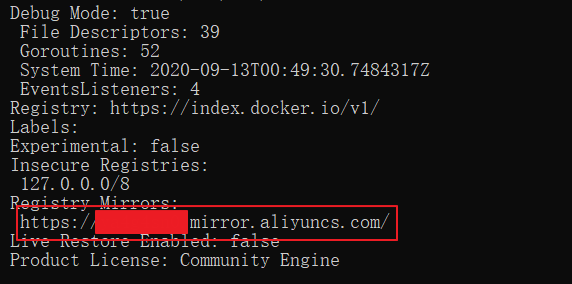

以下命令, 建议在管理员身份下运行powershell中
使用Windows Update自动更新到2004版本. 如果没有检测到更新, 可以去微软官网下载“易升”工具并安装运行. 工具会检测到更新并安装.
启用"适用于Linux的Windows子系统"可选组件:
Enable-WindowsOptionalFeature -Online -FeatureName Microsoft-Windows-Subsystem-Linux
Enable-WindowsOptionalFeature -Online -FeatureName VirtualMachinePlatform
wsl --set-default-version 2
这里可能会报错:
PS C:\WINDOWS\system32> wsl --set-default-version 2
WSL 2 requires an update to its kernel component. For information please visit https://aka.ms/wsl2kernel
For information on key differences with WSL 2 please visit https://aka.ms/wsl2
这里需要去https://aka.ms/wsl2kernel下载Linux 内核, 并安装.
之后, 执行, 发现没有问题
PS C:\WINDOWS\system32> wsl --set-default-version 2
For information on key differences with WSL 2 please visit https://aka.ms/wsl2
应用商店, 下载并安装WSL -- Linux -- Ubuntu 20.04 LTS, 注意, 安装之后, 需要手动点开一下, linux内部有些后续的安装.
linux安装之后, Ubuntu的默认root密码是随机的, 即每次开机都有一个新的root密码, 我们可以在终端输入命令
sudo passwd, 然后输入当前用户的密码, 终端会提示我们输入新的密码并确认, 此时的密码就是 root 新密码, 修改成功后, 输入命令su root, 再输入新的密码就ok了
如果以前已经安装过了, 就不需要下载了, 但是, 有点问题, 需要修改一下:
对于原来的Ubuntu, 可以执行:
PS C:\WINDOWS\system32> wsl -l -v
NAME STATE VERSION
* Ubuntu-20.04 Running 1
发现wsl版本还是1, 这就需要手动改一下了:
windows powershell中输入:
wsl --shutdown
然后输入:
wsl --set-version Ubuntu-20.04 2
这样wsl2就完成了.
检查Ubuntu是否在WSL2的环境下启动:
PS C:\WINDOWS\system32> wsl -l -v
NAME STATE VERSION
* Ubuntu-20.04 Running 2
(1) 查看已安装的linux发行版本wsl -l --all -v
(2) 导出分发版为tar文件到d盘wsl --export Ubuntu-20.04 d:\wsl-ubuntu20.04.tar
(3) 注销当前分发版wsl --unregister Ubuntu-20.04
(4) 重新导入并安装WSL在D盘wsl --import Ubuntu-20.04 d:\ProgramData\wsl d:\wsl-ubuntu20.04.tar --version 2
(5) 设置默认登陆用户为安装时用户名ubuntu2004 config --default-user 用户名
(6) 删除wsl-ubuntu20.04.tardel d:\wsl-ubuntu20.04.tar
这里使用Docker Desktop for Windows
到docker官网下载该安装包, 然后安装即可.
如果发现在WSL下无法执行docker命令, 可以通过如下操作打开:
docker setting界面 -- Resources -- WSL INTERGRATION -- Ubuntu-20.04的一个开关, 调整为开启状态
这里使用阿里镜像, 登录阿里云, 在弹性计算中, 找到"容器镜像服务-镜像加速", 复制加速地址.
打开docker desktop设置, 在docker engine中修改如下:
{
"registry-mirrors": [
"https://xxxxxx.mirror.aliyuncs.com"
],
"insecure-registries": [],
"debug": true,
"experimental": false
}
重启之后, 执行docker info命令, 发现镜像地址已经改好了:

Docker本身的wsl也可以调整地方, 原来的安装位置是C:\Users\frogif\AppData\Local\Docker\wsl, 极度消耗c盘空间:
PS C:\Users\frogif> wsl -l --all -v
NAME STATE VERSION
* Ubuntu-20.04 Stopped 2
docker-desktop Stopped 2
docker-desktop-data Stopped 2
PS C:\Users\frogif> wsl --export docker-desktop d:\docker-desktop.tar
PS C:\Users\frogif> wsl --unregister docker-desktop
Unregistering...
PS C:\Users\frogif> wsl --import docker-desktop d:\ProgramData\distro d:\docker-desktop.tar --version 2
PS C:\Users\frogif> del d:\docker-desktop.tar
PS C:\Users\frogif> wsl --export docker-desktop-data d:\docker-desktop-data.tar
PS C:\Users\frogif> wsl --unregister docker-desktop-data
Unregistering...
PS C:\Users\frogif> wsl --import docker-desktop d:\ProgramData\data d:\docker-desktop-data.tar --version 2
A distribution with the supplied name already exists.
PS C:\Users\frogif> wsl --import docker-desktop-data d:\ProgramData\data d:\docker-desktop-data.tar --version 2
PS C:\Users\frogif> del d:\docker-desktop-data.tar
PS C:\Users\frogif> wsl -l --all -v
NAME STATE VERSION
* Ubuntu-20.04 Stopped 2
docker-desktop Stopped 2
docker-desktop-data Stopped 2